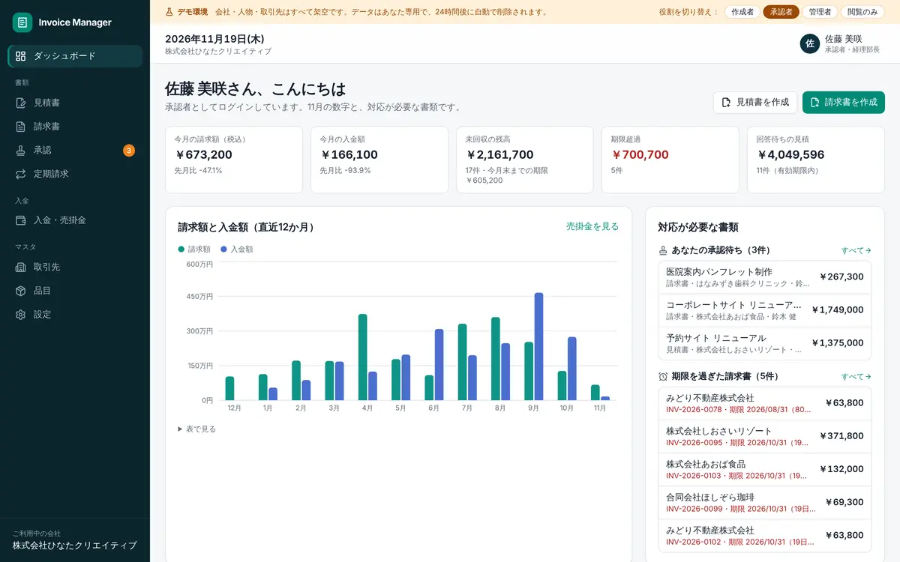
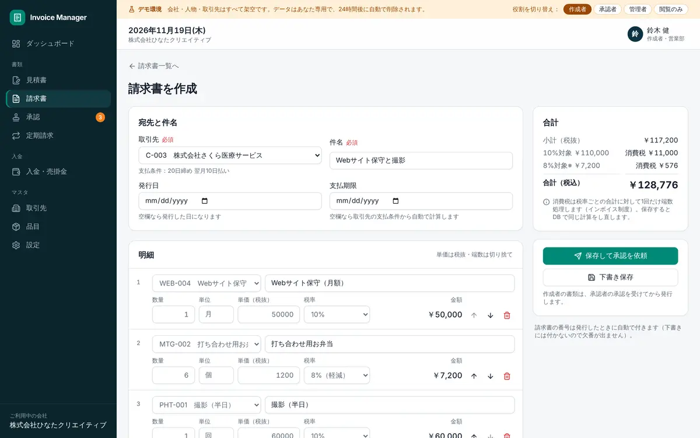
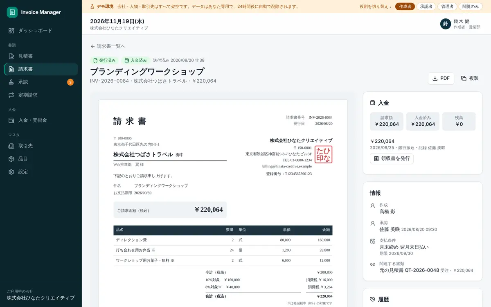
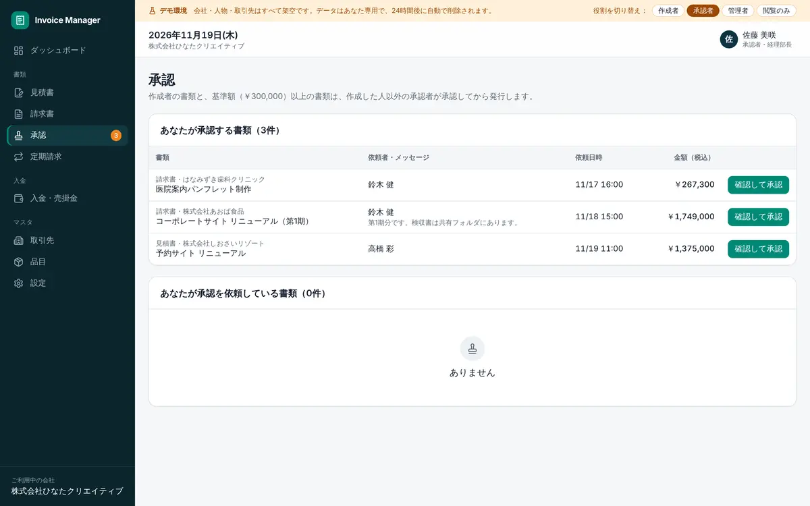
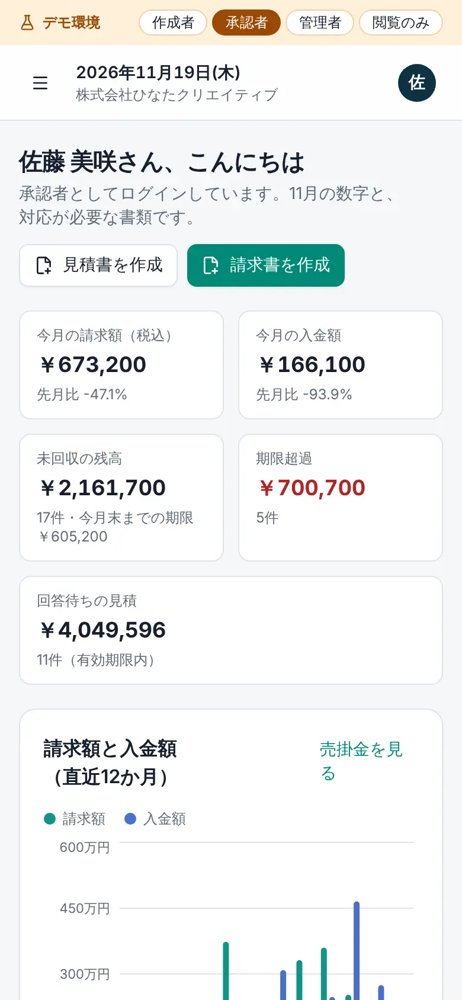
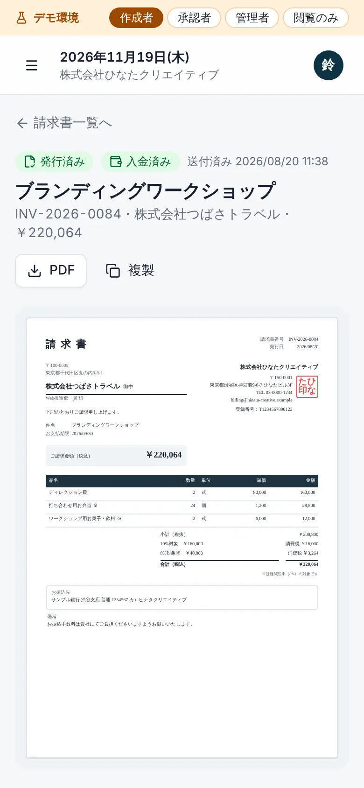
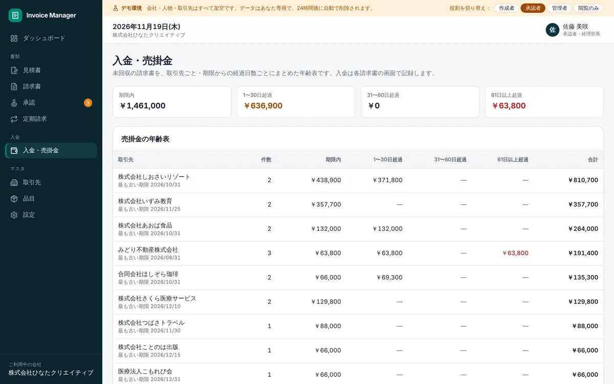

Invoice Manager
見積から承認・請求・入金・領収書までをひとつの流れにまとめ、請求の仕事をチームで正確に進める業務システムです。
- Client
- 社員10〜100名で、見積書・請求書を複数人で作っている会社
- Users
- 管理者・承認者・作成者・閲覧のみ
（PC・スマートフォン） - Demo
- 登録不要。訪問者ごとに
専用のデモ会社を作成

Overview
プロジェクト概要
Excel のひな形とメールでの承認をやめて、「見積 → 承認 → 請求 → 入金 → 領収書」をひとつの流れで管理する、中小企業向けの見積書・請求書の作成システムです。
書類を作る人と承認する人を分け、自分で作った書類は自分で承認できないようにしています。インボイス制度（適格請求書）の記載事項と、税率ごとの消費税の計算に対応しています。
Problem
想定した業務課題
- Excel のひな形をコピーして作るため、宛先や金額の書き間違い、古い版の送付が起きる
- 承認はメールの回覧で、誰が・いつ・どの版を承認したのかが残らない
- インボイス制度に合わせた消費税の計算（税率ごとの端数処理）を、人によって違うやり方でしている
- どの請求書が入金済みで、どれが期限を過ぎているのかを、通帳と Excel を突き合わせないと分からない
- 毎月同じ内容の請求書を、毎回手で作り直している
Solution
解決方法
- 取引先と品目のマスタから明細を作り、宛先と自社の情報は発行した時点の内容で記録して、以後は変えられないようにしました。
- 下書き → 承認依頼 → 承認／差し戻し（理由必須）→ 発行の流れと、その履歴を書類ごとに残します。基準額（既定30万円）以上は、承認者・管理者の書類でも別の人の承認が必要です。
- 消費税は税率ごとに1回だけ端数処理し、画面のプレビューとデータベースで同じ計算をして、テストで一致を確かめています。
- 分割入金と領収書の発行、期限内・1〜30日・31〜60日・61日以上の売掛金の年齢表で、未回収をひと目で分かるようにしました。
- 毎月・3か月ごとなどの定期請求は、毎朝の定期処理で下書きを自動で作ります（承認の流れはふつうの書類と同じ）。
Impact
導入効果の試算
社員20名・月60件の見積書と請求書を作る会社を想定しています。作業ごとの時間と、人件費の時間単価 2,500円（事務・経理担当）は、このページで置いた想定です。
- 削減できる作業時間
- 月 18時間月 28時間 → 月 10時間
- 年間の削減時間
- 216時間月 18時間 × 12か月
- 人件費に換算すると
- 約54万円 / 年月 約4.5万円（時間単価 2,500円）
| 作業（1か月あたり） | 導入前 | 導入後 | 削減 |
|---|---|---|---|
| 見積書・請求書の作成Excel のひな形に宛先・明細・税額を手で入力 → マスタから選んで自動計算、見積から請求書へ変換 | 10時間 | 4時間 | −6時間 |
| 承認のやりとりメールで回覧して修正版を差し替え → 承認依頼・差し戻しを画面で、履歴も自動で残る | 6時間 | 2時間 | −4時間 |
| 入金の確認・未回収の管理通帳と Excel の突き合わせ → 入金を記録すると残高と年齢表が自動で更新 | 8時間 | 3時間 | −5時間 |
| PDF・領収書の作成ファイルを書き出して名前を付けて保存 → ボタンひとつで請求書・領収書の PDF | 4時間 | 1時間 | −3時間 |
| 合計 | 28時間 | 10時間 | −18時間 |
※ 実際の導入実績ではなく、上の想定条件にもとづく試算です。実際の効果は、業務の内容や運用によって変わります。
Features
主要機能
- 見積書・請求書
- 取引先と品目から明細を作成。値引きの行・軽減税率・対象外にも対応。下書き保存、複製、見積書から請求書への変換（受注）。
- 承認の流れ
- 承認依頼・承認・差し戻し（理由必須）。自分で作成・編集した書類は自分で承認できない。基準額以上は別の承認者が必要。
- 発行・インボイス制度
- 発行したときに番号を付けるので欠番が出ない。登録番号、税率ごとの対象額と消費税、軽減税率の「※」。取り消しは理由必須。
- 請求書・見積書・領収書。会社名の文字から角印を描き、日本語フォントは使う文字だけを埋め込む。
- 入金・売掛金
- 分割入金と入金ごとの領収書。支払条件（20日締め翌月10日払い など）から期限を自動で計算し、売掛金を年齢表で表示。
- 定期請求・ダッシュボード
- 毎月・3か月ごとの請求書の下書きを自動で作成。今月の請求額・入金額・未回収・期限超過と、自分の対応が必要な書類。
Screens
スクリーンショット






Tech
使用技術
- Next.js 16（App Router・Server Actions）
- React 19
- TypeScript
- PostgreSQL 16（Neon）
- Tailwind CSS 4
- shadcn/ui
- React Hook Form・Zod
- Recharts
- pdf-lib
- Vitest
- Playwright
- Vercel
- 書類・明細・入金・採番の表にはアプリから直接書き込めないようにし、保存・承認・発行・入金はすべてデータベースの関数を通して、その中で役割・状態・版を確かめています。画面のボタンを隠すだけに頼りません。
- 保存される金額は常にデータベースが計算し直した結果です。画面のプレビューと同じ計算であることを、テストで確かめています。
- すべての表に行レベルセキュリティ（RLS）をかけて会社ごとにデータを分け、書類には版番号を持たせて、古い画面からの上書きを止めています。
Links
デモ・ソースコード
- デモinvoice-manager-a-a636.vercel.app（新しいタブで開きます）
- GitHubgithub.com/tono3679-creator/invoice-manager（新しいタブで開きます）
登録は不要です。ログイン画面の「作成者として体験」「承認者として体験」「管理者として体験」を押すと、訪問者ごとに専用のデモ会社（架空の制作会社「株式会社ひなたクリエイティブ」・社員5人・書類 約200件）が作られ、24時間後に自動で削除されます。画面上部の「役割を切り替え」で、作成者が依頼して承認者が承認する流れを1人で試せます。